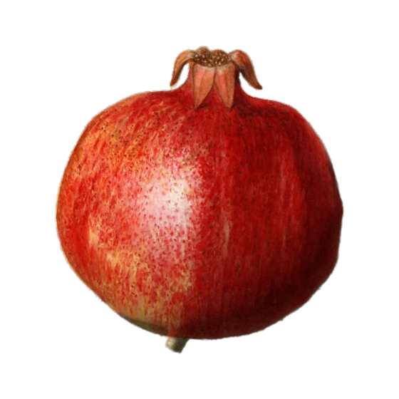

Harvest 2026 · pressing now
Pressed the morning it was picked.
Pomegranates from one south-facing hillside, cold-pressed within hours and bottled unfiltered. Nothing added, nothing taken out.
Six bottles to a case · shipping October to January
